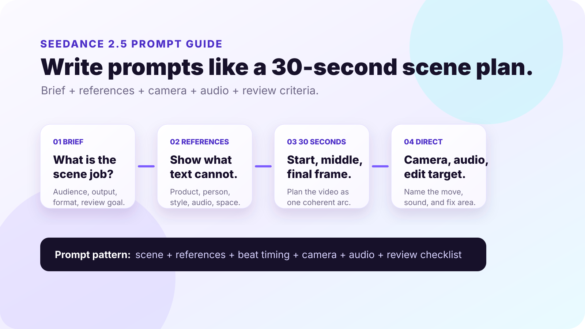
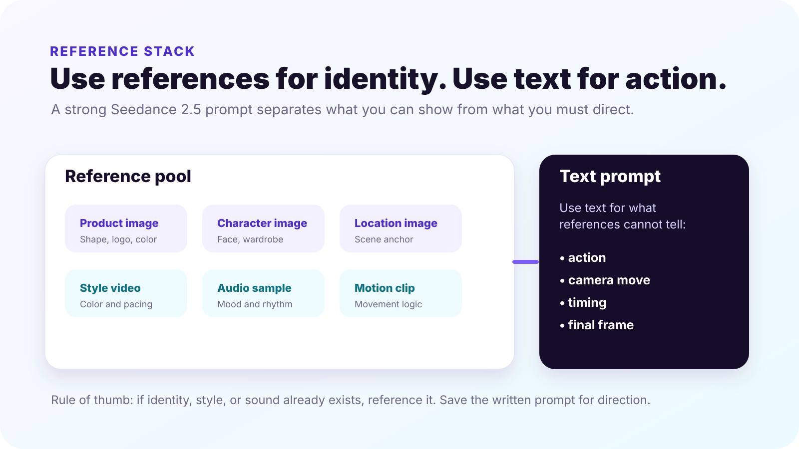
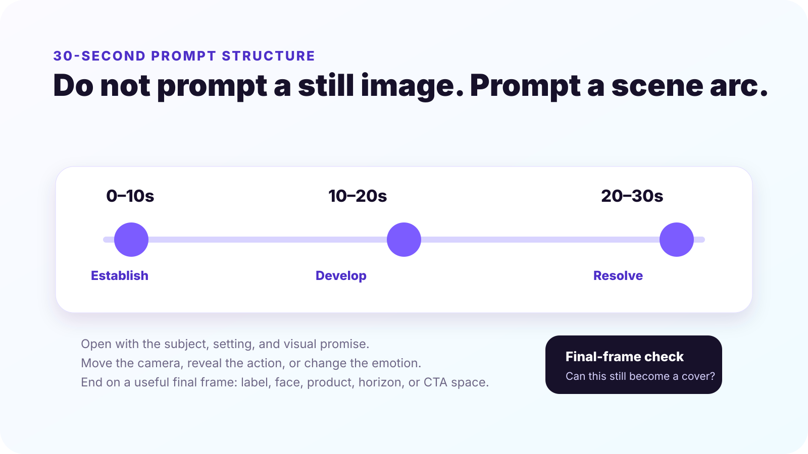
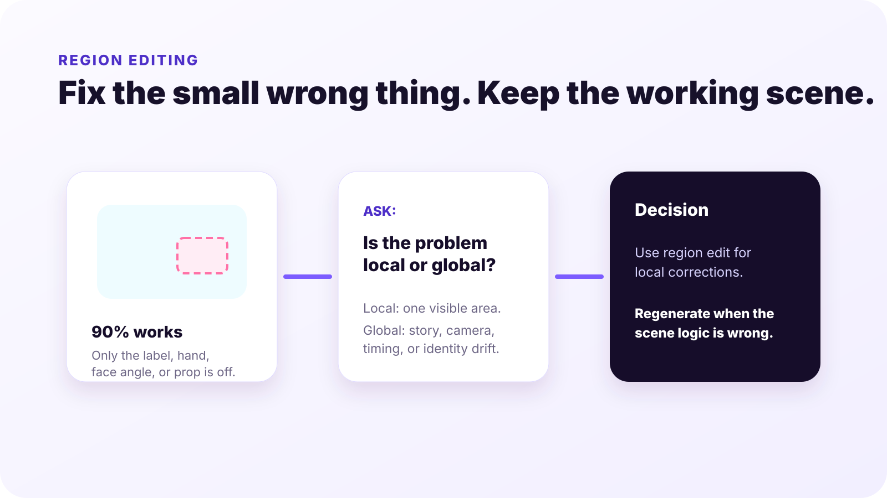

SEEDANCE 2.5 PROMPT TUTORIAL
Seedance 2.5 prompt guide for better AI video results.
Seedance 2.5 prompts work best when they read like a small production plan: what the scene should do, which references define identity, how the camera moves, where the audio fits, and what the final frame must be useful for.

Summary for fast readers
- Use references for identity, style, product detail, audio mood, and motion examples.
- Write the prompt as a 30-second scene arc: establish, develop, resolve.
- Name camera movement, lighting, sound, final-frame use, and review criteria.
- Use region editing only when the scene works and one local area needs correction.
Trust note
This page teaches prompt structure. It does not guarantee that every Seedance 2.5 feature, reference limit, audio behavior, region editing control, or output setting is available in every product route. Verify the current tool interface before relying on a specific capability.
EDITORIAL METHOD
How this tutorial was built.
This guide is an original ChatArt Pro Learn tutorial. It uses OpenArt's Seedance 2.5 prompt guide as the main structural reference, then cross-checks capability themes against ImagineArt's Seedance 2.5 guide and Lushbinary's developer-oriented overview. The examples, diagrams, prompt templates, and review checklists below are written specifically for creators and marketers learning AI video prompting.
Public Seedance 2.5 details, access routes, generation limits, reference controls, audio behavior, region editing, pricing, and commercial-use terms may change. Treat this page as prompt education, then confirm the current app experience before using outputs publicly.
PROMPT PRINCIPLE
Prompt the scene job before you describe the scene style.
A weak AI video prompt usually starts with style: "cinematic product video, beautiful lighting." A stronger Seedance 2.5 prompt starts with the job: "create a 30-second vertical product tutorial that opens with the problem, shows one product interaction, and ends on a clean cover frame." Style still matters, but it should support a clear scene purpose.
| Prompt layer | What to write | Why it helps |
|---|---|---|
| Job | Product reveal, creator tutorial, social ad, model intro, story scene | Gives the video a reason to exist. |
| References | Product image, face, outfit, environment, motion, audio mood | Preserves identity and style better than text alone. |
| Scene beats | 0-10s establish, 10-20s develop, 20-30s resolve | Prevents a 30-second clip from feeling like one stretched shot. |
| Direction | Camera move, lighting, pacing, sound, final frame | Tells the model how the scene should unfold. |
| Review | Continuity, product accuracy, text-safe space, claims, rights | Turns generation into a usable creative process. |
REFERENCE STACK
Use references for identity; use text for action.
If Seedance 2.5 gives you room to use many references, resist the urge to upload everything. References should reduce ambiguity, not create a visual argument. Use them to lock the subject, product, location, style, and sound. Then use the written prompt to control what happens.

Use product references sparingly
One clear product reference often helps more than five conflicting product angles. Add only the details the video must preserve.
Separate identity from mood
Use one reference for the subject or product, and a different reference for lighting, color, or pace if needed.
Label reference roles
In the prompt, say what each reference is for: "use image A for product shape; use image B for lighting mood."
Remove noisy inputs
If a reference has unwanted logos, busy text, or a style you do not want copied, crop or replace it before generation.
30-SECOND STRUCTURE
Break longer prompts into three scene beats.
Seedance 2.5 is commonly discussed around longer, more coherent video generation than earlier short-clip workflows. That does not mean you should write one long paragraph and hope the model finds the story. For a 30-second prompt, write three beats.

Create a 30-second [format] AI video for [topic/product]. Use [reference A] for [identity/detail] and [reference B] for [style/mood]. 0-10s: establish [subject, setting, problem]. 10-20s: show [action, transformation, interaction]. 20-30s: resolve with [outcome] and hold a clean final frame for [cover, title, CTA, or caption]. Camera: [movement]. Lighting: [style]. Audio: [mood/dialogue/ambient cue]. Avoid: [errors]. Review for: [continuity, product accuracy, text-safe space].
COPYABLE PROMPTS
Seedance 2.5 prompt examples you can adapt.
Create a 30-second vertical AI video for a skincare product tutorial. Use the product reference image to preserve bottle shape, label placement, and color. 0-10s: creator holds the product near a bathroom mirror and names the skin concern. 10-20s: close-up of product texture and one gentle application motion. 20-30s: creator smiles in soft morning light, product placed on counter, final frame has clean space for tutorial title. Camera: handheld but stable, slow push-in on texture. Audio: calm bathroom ambience, soft voiceover mood. Avoid distorted hands, unreadable label, exaggerated skin claims.
Create a 15-second vertical social ad for a productivity app. Use the uploaded UI screenshot only for layout and color palette. 0-5s: messy desk, scattered sticky notes, creator looks overwhelmed. 5-10s: phone screen shows notes becoming a weekly plan. 10-15s: clean final frame with phone on desk and space for headline. Camera: quick opening cut, smooth push-in during transformation, final locked shot. Audio: light ticking at start, calmer beat at the end. Review for UI consistency and final-frame text space.
Create a 30-second educational AI video introducing a video generation model. 0-10s: show inconsistent clips flickering between different characters and lighting. 10-20s: transition to a planned storyboard with the same character, same outfit, and same product across three shots. 20-30s: final frame shows the prompt structure: references, scene beats, camera, audio, review. Style: clean SaaS tutorial, purple-blue accents, readable overlays, no fake brand logos.
Create a 20-second creator-style video about planning a week of content. 0-6s: creator opens notes app with too many ideas. 6-14s: ideas organize into three content pillars with subtle animated cards. 14-20s: creator records a short clip with confidence, final frame leaves room for caption. Camera: natural desk-level framing, realistic phone movement, warm daylight. Audio: quiet keyboard, soft upbeat rhythm. Avoid over-polished corporate look.
BAD VS BETTER
Better prompts reduce randomness.
| Weak prompt | Better Seedance 2.5 prompt | What changed |
|---|---|---|
| Make a cinematic product video. | Create a 30-second product reveal for [product]. Use reference A for product identity. 0-10s show the problem, 10-20s reveal the product interaction, 20-30s hold a clean final frame with space for title. Camera: slow dolly-in. Lighting: soft studio. Avoid distorted label. | The better version defines identity, timing, camera, and review risks. |
| Make it viral for TikTok. | Create a 12-second vertical creator clip. First 2 seconds show the surprising before state, next 6 seconds show the transformation, final 4 seconds show the result with room for caption text. Use a casual phone-shot style and upbeat audio mood. | It turns a vague platform goal into timing and visual behavior. |
| Fix the background. | Use region editing only on the left background wall. Replace the distracting poster with a plain warm beige wall. Keep the person, product, lighting, camera movement, and final frame unchanged. | The edit target is local, and the prompt protects everything else. |
REGION EDITING
Use region editing when the clip is almost right.
One of the most practical habits in AI video production is knowing when not to regenerate. If the camera, timing, subject, and mood work, but one small object is wrong, a local edit is usually the cleaner move. If the whole scene logic is wrong, rewrite the prompt and regenerate.

| Problem | Use region edit? | Prompt note |
|---|---|---|
| Wrong label on a bottle | Yes | Mask only the label area; keep lighting and bottle shape unchanged. |
| Distracting object in background | Yes | Replace only the object; do not change the subject or camera path. |
| Character changes identity between shots | No | Regenerate with stronger identity references and continuity instructions. |
| Camera movement feels wrong | No | Rewrite the scene direction with a clearer camera path. |
AUDIO AND DIALOGUE
Write audio notes as direction, not decoration.
If the tool route supports audio or dialogue control, write audio like part of the scene plan. Good audio notes explain pacing and emotion: "soft room tone, slow calm voiceover, music lifts after the product reveal." Weak audio notes are generic: "add nice music."
Ambient sound
Name the environment: kitchen hum, quiet office, city morning, bathroom echo, studio silence.
Music mood
Describe energy and timing: calm start, subtle lift at reveal, no dramatic bass drop.
Voiceover
Keep lines short enough to fit the scene. A 15-second clip cannot carry a 90-word script.
Lip-sync risk
If dialogue accuracy matters, test a shorter line first and review mouth movement before scaling.
REVIEW CHECKLIST
Check the output before you reuse it.
- Continuity: Does the same person, product, outfit, or setting stay recognizable across the clip?
- Product and claim accuracy: Does the output imply a feature, result, certification, or comparison that you cannot support?
- Text and final frame: Is visible text readable, and can the final frame work as a cover or CTA frame?
- Motion logic: Does the camera movement support the message, or does it create visual noise?
- Audio fit: Does the sound mood match the scene, and does dialogue feel synced enough for the use case?
- Rights and terms: Are references, likenesses, product marks, and commercial-use terms safe for the intended use?
FAQ
Seedance 2.5 prompt questions.
Is Seedance 2.5 better for long prompts or short prompts?
Use a complete prompt, not a bloated one. Include the scene job, references, timing, camera, audio, and review criteria, but remove adjectives that do not change the output.
How many references should I use?
Use only the references that reduce ambiguity. A product image, one style reference, and one motion or audio cue may be stronger than a large set of conflicting inputs.
Should I write prompts in paragraph form or shot-list form?
For longer AI video, shot-list form is usually easier to review. Break the prompt into time ranges or beats, then add camera and audio direction.
What should I do when the first result is close but not usable?
If the issue is local, use a region edit. If the issue is the scene concept, identity, timing, or camera direction, rewrite the prompt and regenerate.
PRACTICE THE GUIDE
Open ChatArt Pro and test one Seedance 2.5-style prompt.
Start with one topic, one reference, and a three-beat scene plan. Generate one version, review it with the checklist, then decide whether to edit locally or rewrite the prompt.